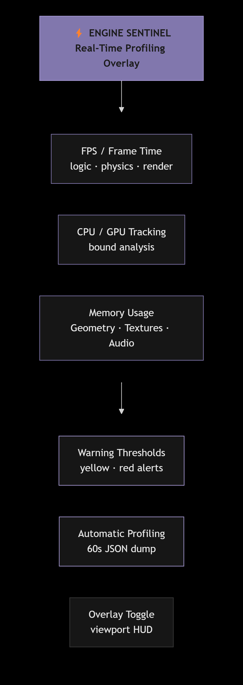
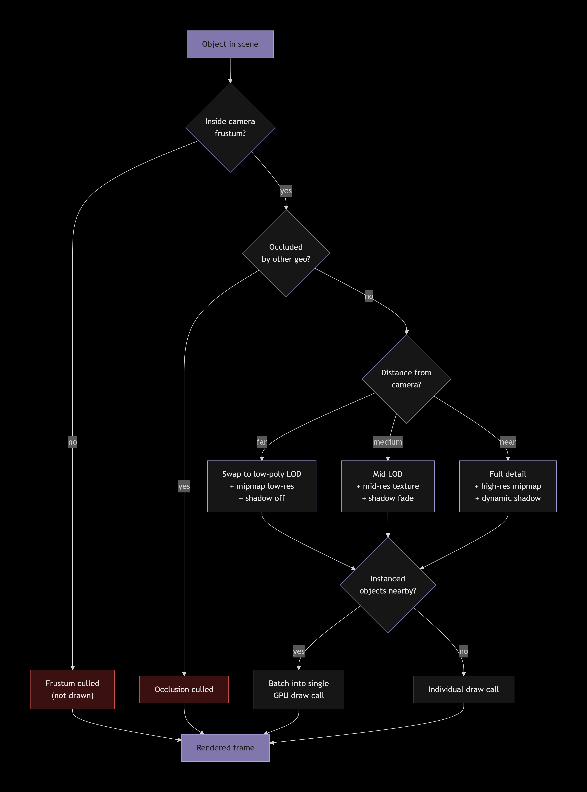
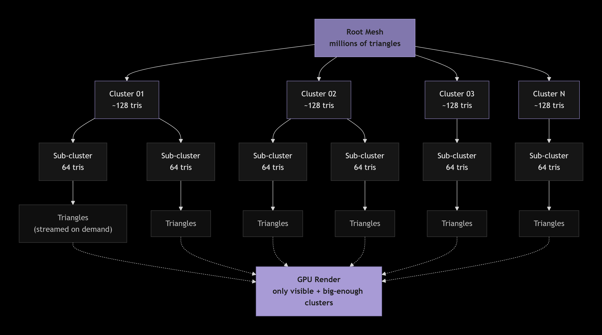
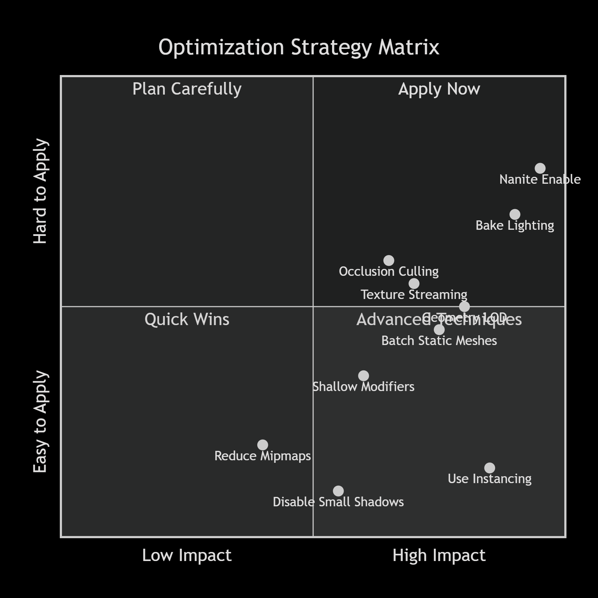

Performance & Optimization
Maintaining high frame rates while pushing visual fidelity is a primary challenge in 3D development.
SM Engine provides comprehensive profiling tools and dynamic optimization systems via
EngineSentinel.js, PerformanceManager.js, and NaniteSystem.js
to keep your applications running smoothly.
Engine Sentinel
The Engine Sentinel is a real-time profiling overlay built directly into the viewport. It monitors the health of the engine loop and alerts you to bottlenecks.
- FPS / Frame Time: Monitors overall frame rate and specific ms-timings for logic, physics, and rendering loops.
- GPU/CPU Tracking: Displays utilization ratios to help identify whether you are CPU bound (too much scripting/physics) or GPU bound (heavy shaders/overdraw).
- Memory Usage: Tracks VRAM allocated to Geometry, Textures, and Audio.
- Warning Thresholds: The overlay will flash yellow or red when memory or frame times exceed safe thresholds defined in project settings.
- Automatic Profiling Mode: When enabled, the engine will dump a detailed JSON report of the slowest functions over a 60-second window.

Performance Manager
The Performance Manager handles scene-level culling and distance-based optimizations automatically.
| System | Description |
|---|---|
| LOD System | Automatically swaps meshes to lower polygon versions (Level of Detail) as they move further from the camera. |
| Object Culling | Utilizes Frustum Culling (not drawing things behind the camera) and Occlusion Culling (not drawing things hidden behind walls). |
| Batch Rendering | Groups thousands of identical instanced objects (like trees or grass) into a single GPU draw call. |
| Texture Streaming | Loads high-resolution mipmaps only for objects close to the camera, saving massive amounts of VRAM. |
| Shadow Distance | Fades out dynamic shadows past a certain radius, falling back to baked lighting or ambient occlusion. |

Nanite System
SM Engine includes a virtualized geometry system based on NaniteSystem.js. Nanite
allows you to import cinematic-quality scanned meshes with millions of polygons without bogging down
the GPU.
- Virtualized Geometry: Nanite breaks meshes into hierarchical clusters. It only streams and renders the specific polygon clusters that are visible and large enough to matter on screen.
- Automatic LOD: Eradicates the need for manual LOD generation. The system seamlessly scales detail down to the pixel level based on the Screen Space Error Threshold parameter.
- Toggle per Object: You can enable or disable Nanite on a per-mesh basis in the mesh properties panel.
- Cluster Visualization: View the cluster breakdown in real-time using the Nanite Debug view mode.

Stack Optimizer
When working with complex Modifiers or Geometry Nodes, the Stack Optimizer works in the background to ensure real-time playback.
- Evaluation Order: Groups compute-heavy modifiers together.
- Caching: Caches the evaluated mesh states of static objects so they don't recompute every frame.
- Incremental Updates: Only updates the specific vertices affected by a localized modifier, rather than recalculating the entire mesh.
General Optimization Tips
- Use Instancing: Whenever you have repeated objects (crates, pillars, trees), use instances rather than duplicates to save memory and draw calls.
- Keep Modifiers Shallow: For objects that deform in real-time, keep the modifier stack as small as possible.
- Disable Shadows on Small Objects: Pebbles and small debris do not need to cast dynamic shadows. Turn off their shadow casting to save render time.
- Bake Lighting: For static environments, use baked lightmaps rather than real-time directional lights for ambient bounces.
